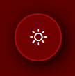

Alteração Condicional de Classes
Este texto muda de cor.
Estilização Adicional
Este texto pode ser estilizado como negrito e/ou itálico.
Lista de Tarefas
- Tarefa: {{tarefa.texto}}
Formulário de Contato
Formulário enviado com sucesso!
Alteração Basica Condicional
- Função do ng-class
- Papel do CSS
- Interação ng-class e CSS
Alteração Condicional de Classes: ng-class é usado para aplicar classes CSS a elementos HTML com base no valor das variáveis do escopo.
Ele permite que a aparência dos elementos seja atualizada dinamicamente em resposta a mudanças no estado da aplicação.
Definição de Estilos: Classes CSS definem os estilos que serão aplicados aos elementos.
Por exemplo, classes como .vermelho, .verde, .negrito, e .italico são definidas no CSS para
alterar a cor do texto ou aplicar estilos de negrito e itálico.
Vermelho/Verde: Um checkbox controla a variável isVermelho. Se isVermelho for verdadeiro, ng-class aplica a classe .vermelho ao parágrafo, mudando a cor do texto para vermelho.
Se for falso, aplica .verde, mudando a cor para verde.
Negrito/Itálico: Outros checkboxes controlam as variáveis isNegrito e isItalico.
Dependendo do estado dessas variáveis, ng-class aplica .negrito e/ou .italico ao parágrafo, estilizando o texto conforme necessário.
Lista de Tarefas
- Função do ng-class
- Papel do CSS
- Interação ng-class e CSS
Estilização Condicional de Tarefas: ng-class é usado para aplicar a classe .tarefa-completa a itens da lista de tarefas que foram marcados como completos.
A aplicação dessa classe é baseada no estado da propriedade completa de cada tarefa.
Definição de Estilos: A classe CSS .tarefa-completa define um estilo que risca o texto, indicando visualmente que a tarefa foi concluída.
Tarefas Concluídas: Cada tarefa na lista é renderizada com uma checkbox que controla se a tarefa está completa.
Quando a checkbox é marcada, a propriedade completa da tarefa é definida como verdadeira, e ng-class aplica a classe
.tarefa-completa ao item da lista, riscando o texto para indicar que a tarefa foi concluída.
Formulário de Contato
- Função do ng-class
- Papel do CSS
- Interação ng-class e CSS
Validação do Formulário: ng-class é usado para aplicar classes CSS com base no estado de validação do formulário.
Por exemplo, pode-se aplicar classes diferentes ao formulário quando ele está válido ou inválido.
Feedback Visual de Submissão: ng-class também pode ser usado para alternar entre a exibição do formulário e uma mensagem de sucesso após o envio do formulário.
Definição de Estilos: Classes CSS como .formulario-valido e .formulario-invalido definem estilos visuais para os diferentes estados do formulário.
Por exemplo, um formulário válido pode ter um fundo verde claro, enquanto um formulário inválido pode ter um fundo vermelho claro.
Validação Visual: Quando os campos do formulário são preenchidos corretamente, a variável formularioValido é definida como verdadeira, e ng-class aplica a classe
.formulario-valido, estilizando o formulário para indicar que está correto.
Se o formulário estiver inválido, ng-class aplica a classe .formulario-invalido.
Exibição Condicional: Após o envio do formulário, ng-class pode ocultar o formulário e exibir uma mensagem de sucesso baseada na variável formularioEnviado.
ATENÇÃO - VOCÊ PERCEBEU??
Nessa pagina, além de todo conteudo explicado até o momento, fizemos um componente que muda totalmente a estilização de nossa pagina, você encontrou?
DICA - ONDE ENCONTRAR O BOTÃO!
Consegue identificar o botão do sol em nosso cabeçalho?? Pois é, lá é nosso objetivo, va até o cabeçalho da pagina, e clique para ver o que acontece!
